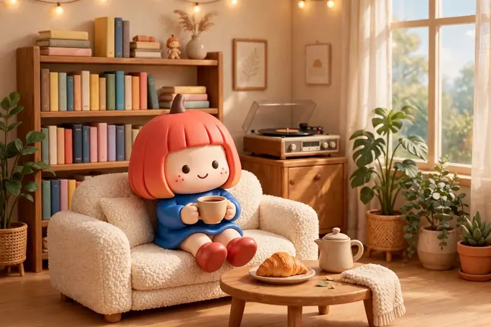
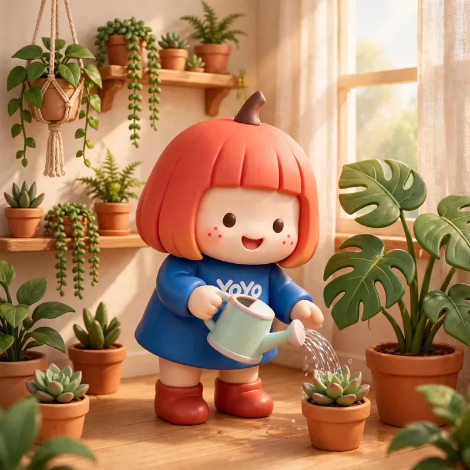
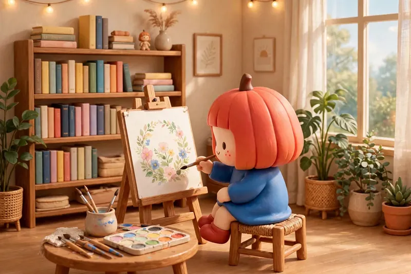
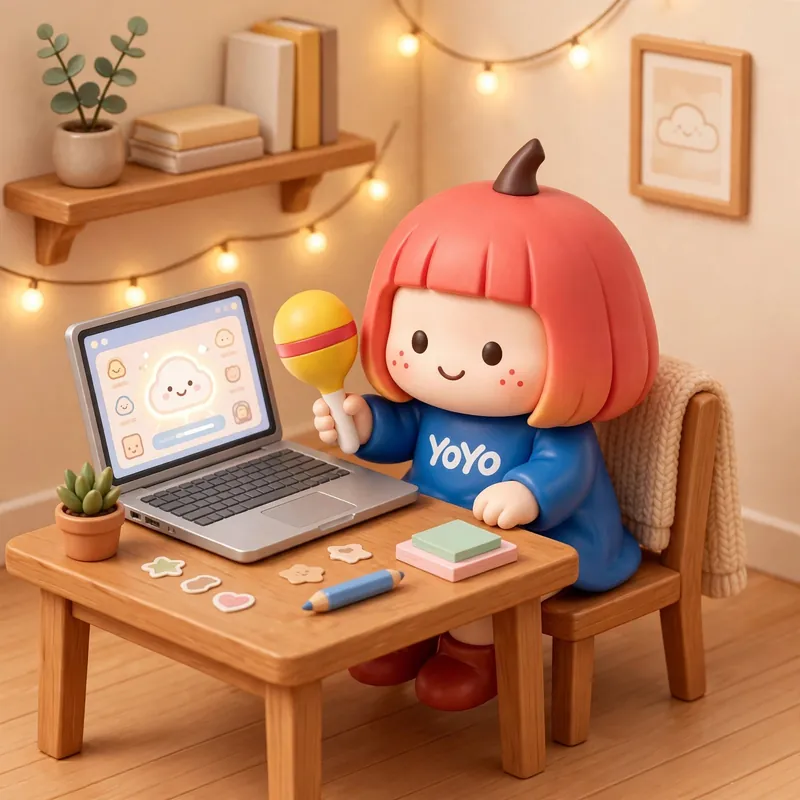
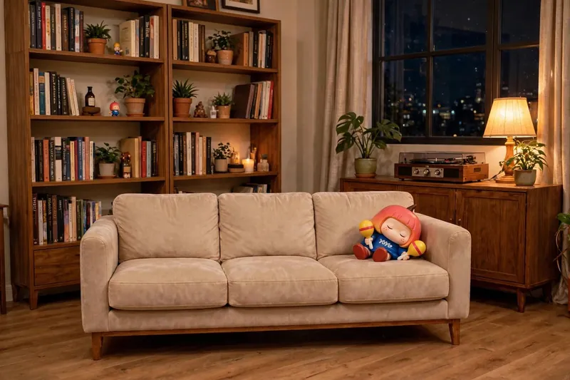

咖啡角奶白色的绒绒沙发，配一张小圆茶几。咖啡壶、可颂，还有一条搭着的针织毯。
给 YOYO 点一杯
拿铁 —— 奶泡绵绵的，配可颂正好。YOYO 捧着杯子，满足地眯起眼睛。
YOYO 的休闲小天地 —— 不工作，只放松：喝咖啡、看书、听音乐、侍弄绿植。
正在看看现在几点…点「去这个角落」，YOYO 就挪过去；每个角落里还有个小玩法。

咖啡角奶白色的绒绒沙发，配一张小圆茶几。咖啡壶、可颂，还有一条搭着的针织毯。
窗边的圆沙发椅，旁边是满满的书架和一盏暖暖的台灯。天黑了也不怕，灯一开就是一个小世界。
一台木壳黑胶唱片机，一只小音箱，一摞唱片。戴上耳机，闭上眼睛，跟着轻轻晃。

绿植角靠窗一整面绿：龟背竹、绿萝、多肉、小蕨类。阳光好的时候，这里最鲜亮。

绘画角窗边支起小画架，水彩颜料盘、笔洗杯一字排开。画花，画绿植，也画窗边的阳光。
小厨房 17 点开火准备晚饭。系上番茄围裙，炒两个菜，再煮一锅汤，简单又热乎。
大窗边铺一条编织毯，阳光整片洒进来。YOYO 躺下眯着眼，晒着晒着就打起盹来。
窗边一架木色立式钢琴，谱架上摊着乐谱。YOYO 坐上琴凳，手搭上琴键，慢慢弹。
窗边的小圆桌，11 点准时开饭。一碗热汤、两碟小菜，趁热慢慢吃。
大窗边铺一张编织垫，下午 3 点动一动：伸伸懒腰、活动活动，出点汗正舒服。

电脑角晚上 9 点，小木桌前打开苹果笔记本，配一杯热饮，看看今天的照片和消息。

休息角夜里 22 点到早上 6 点，YOYO 就窝回米色绒沙发里打盹。台灯留一盏暖黄的光，书架和唱片机都安安静静的，窗外是夜色。
第一版小房间先这样。左边是已经有的，右边是你可能想添的——点一点先记在心愿单上，看好了再告诉我添哪些。
还没有选。点上面的小签，挑你想要的。
一天的节奏，从早上 6 点开始：6 点浇水（一小时）· 7 点看书 · 8 点画水彩 · 9 点弹钢琴 · 10 点听音乐 · 11 点吃饭 · 12 点晒太阳到 14 点（下雨、下雪、雷雨时改成看书，天一放晴自动换回晒太阳）· 14 点喝咖啡 · 15 点运动 · 16 点听音乐或看书轮换 · 17 点烧饭 · 19 点弹钢琴或看书轮换 · 20 点听音乐 · 21 点玩电脑（苹果笔记本）· 22 点回休息角睡觉，一直到早上 6 点。按上面的时间表到点换，轮换时段里交叉着来；到点 YOYO 自己换地方，天气一变也会跟着换。